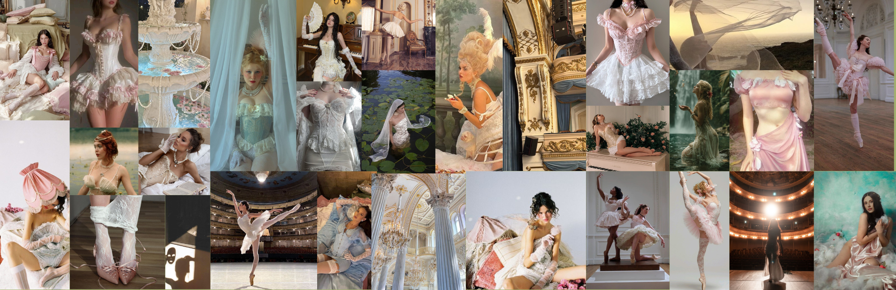

Feérica nace del cruce entre el underwear y el costumewear: dos universos que, aunque parecen opuestos, encuentran un punto común en la transformación del cuerpo femenino. La marca toma la intimidad y sensibilidad de la lencería y las mezcla con el dramatismo, la fantasía y la presencia escénica del vestuario de disfraz y performance. El resultado son piezas que no funcionan únicmete como ropa interior ni como vestuario teatral, sino como una nueva forma de habitar el cuerpo desde la fuerza, la fantasía y la identidad. En Feérica, las transparencias, estructuras, encajes, herrajes y siluetas envolventes construyen una estética donde lo delicado convive con lo imponente. La lencería deja de esconderse para convertirse en protagonista, mientras elementos inspirados en armaduras, hadas, personajes míticos y escenarios fantásticos transforman cada prenda en una extensión emocional y simbólica de quien la usa. La marca entiende el vestir como un acto de interpretación personal. Cada colección propone la posibilidad de convertirse en otra versión de sí misma: más libre,más poderosa, más visible. Feérica no busca separar fantasía y realidad; busca unirlas a través de prendas que permiten revelar sensibilidad sin perder fuerza, y mostrar el cuerpo sin renunciar al poder

The Voluntarists, el perfil de usuario. Feérica se dirige a una mujer que no consume moda de manera pasiva, sino que actúa desde la intección. Es alguien que elige cómo mostrarse, que entiende la sensualidad como lenguaje propio y no como espectáculo externo. Esta conciencia atraviesa toda la marca: cada transparencia, cada ajuste, cada estructura responde a una decisión, no a una imposición. Vestirse, en Feérica, es un acto de control y de presencia. A esta base se suman los pronosticos de WGSN para 2026 que definen la experiencia estética y material de Feérica. permite elevar lo cotidiano: lo que normalmente es básico o funcional se transforma en algo significativo. La lencería se vuelve pieza central, no complemento. Cada prenda tiene una intención clara y un valor simbólico, sin perder su funcionalidad. En la coleccion de férica estan los pronosticos extraordinario y Soñar despierto, Introduce la dimensión sensorial. La ligereza, la fluidez y la relación con el movimiento hacen que las prendas no se sientan como peso, sino como extensión del cuerpo. Materiales translúcidos, textiles suaves y caídas ligeras, respira con quien la lleva y sugiere más de lo que muestra. Feérica no propone una fantasía escapista, sino una imaginación aplicada a la realidad. Lo onírico se integra en lo cotidiano, lo simbólico se vuelve vestible. La prenda no es un disfraz, es una forma de expandir la identidad sin abandonar el presente.